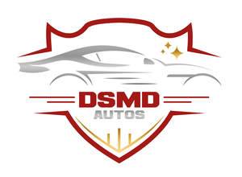

Trade Mark Journal No.2025/016 18 April 2025
UK00004184660 4 April 2025 (7,9,12)

- Class 7
- Air compressor pumps; Air compressors; Air compressors for vehicle compressed air systems; Compressed air motors; Screw air compressors; Compressed air switch valves; Air condensers [compressors]; Rotary air compressors; Compressed air pilot valves; Air compressors for vehicles; Suction valves for air compressors; Compressors for air conditioners; Compressors for air handlers; Automatic inlet control valves for reciprocating air compressors; Unloading check valves for the outlets of air compressors; Air condensers; Compressed air pumps; Compressed air hoists; Compressors for air conditioning apparatus; Air pumps; Starting couplings for air vehicles; Compressed air engines; Air compressors [machines]; Air cleaners [air filters] for engines; Compressed air sprayers; Air filters for motors; Air ducting for jet engines; Afterburners for air vehicle engines; Air drills; Robotic compressed air pumps; Gas turbine engines for air vehicles; Air blowers; Filters for cleaning cooling air, for engines; Air jet cleaners (Electric -); Starter motors; Air brushes; Air cushion vehicles (Engines for -); Engines for air cushion vehicles; Electric starter motors; Air hose reels [mechanical]; Air filters for motorcycle engines; Air pumps [garage installations]; Diesel motors for air vehicles; Piston compressors; Suction valves for gas compressors; Compressed air machines; Air pumps for use in terrariums; Air hammers; Air tackers; Air filters for engines; Air filters for automobile engines; Steam engine boilers for power generation, other than for land vehicles; Hoses (Metal -) for transferring hydraulic power in machines; Electric fan units for vacuum cleaners; Electrical motor pump units; Power valve for carburetors [vehicle parts]; Gas generators [compressors] for undersea lifting; Power transmissions for water vehicles; Hoses (Non-metallic -) for transferring hydraulic power in machines; Fuel injector parts for land and water vehicle engines; Emergency power supply generators; Ram air turbines [other than for land vehicles]; Electric power generators using geothermal power; Power transmission belts for sea craft; Electric power generators for emergency use; Hydraulic torque converters [machine elements not for land vehicles]; Power transmission couplings for water vehicles; Fuel and air mixture regulators being parts of internal combustion engines; Internal combustion engines for power generation, other than for land vehicles; Air turbines [not for land vehicles]; Variable speed power transmission apparatus [other than for land vehicles]; Electric power generators using waste heat; Gas operated power generators; Power jacks; Pneumatic fuel injectors for motors; Electric power supplies [generators]; Hydraulic torque converters, not for land vehicles; Power transmission couplings for sea craft; Electric power generators for ships; Discharge screws for compressed air [parts of machines]; Geared electric motors for water craft; Electric generator power sets; Electric compressors; Portable electric power generators; Electric power generators.
- Class 9
- Compressed air bailout units for diving; Car jump starters; Battery jump starters; Starter cables for motors; Jump start cables; Power line conditioners; Motor vehicle power locks; Electric power supply units; Electric power controllers; Electric power converters; Electric power supply sockets; Power conditioners; Electric power units; Electrical power outlet boxes; Mains power units (Electric -); Power banks; Switching power supply apparatus; Underwater power cables; Uninterruptible power supply apparatus [battery]; Air traffic control radio equipment; Power wires; Flow control installations [electric]; Voltage regulators for electric power; Voltage stabilizing power supply.
- Class 12
- Truck air brake hoses; Air pressure pumps [vehicle accessories]; Launching gear for air vehicles; Air flow spoilers for vehicles; Pumps (Air -) [vehicle accessories]; Air pumps [vehicle accessories]; Air flow spoilers; Powered vehicles for use in the air; Propellers for air vehicles; Air vehicles; Air cushion vehicles; Vehicles (Air cushion -); Air pumps for inflating bicycle tyres; Air pumps for motorcycles; Hydraulic power transmission units for land vehicles; Power transmission belts for land vehicle engines; Ram air turbines for land vehicles; Starter motors for land vehicles; Power take-off transmission units for land vehicles; Compressors for supercharging internal combustion engines of land vehicles; Power transmission belting for land vehicles; Electric gear shifting apparatus for land vehicle motors.
DSMDPRODUCTS LTD